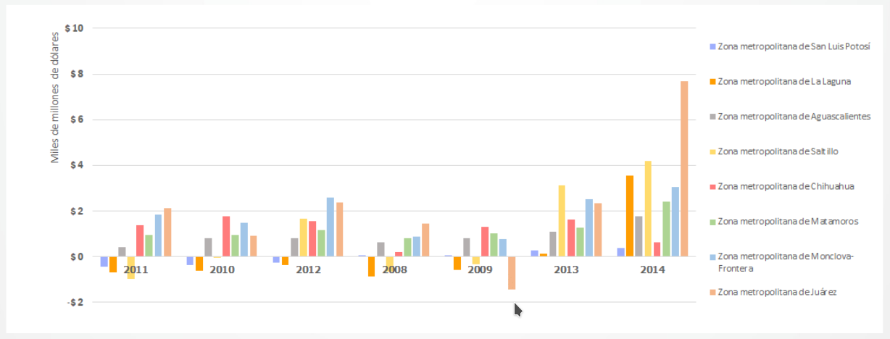
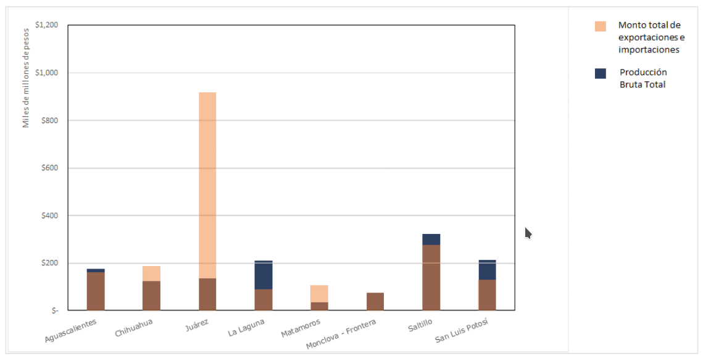

Presentación

COMERCIO EXTERIOR
Las estadísticas de exportaciones e importaciones de 1993 a 2014 se pueden consultar en el portal de la Secretaría de Administración Tributaria (SAT) y fueron integradas por Banco de México, INEGI, SAT y la Secretaría de Economía. Los datos recopilados incluyen las cantidades de exportaciones e importaciones y sus montos totales en pesos, desagregado por producto de acuerdo a la clasificación definida en la Ley de los Impuestos Generales de Importación y de Exportación (TIGIE), que está basada en la nomenclatura arancelaria del Convenio Internacional del Sistema Armonizado de Designación y Codificación de Mercancías (Sistema Armonizado), de la Organización Mundial de Aduanas, del cual México es parte contratante.
Indicadores macroeconómicos
| Indicador | Dato | Periodo | Nivel | Fuente |
|---|---|---|---|---|
| Total de exportaciones | $6,131 millones de dólares | 2014 | La Laguna | SAT |
| Total de importaciones | $1,659 millones de dólares | 2014 | La Laguna | SAT |
| Balanza comercial (superávit) | $4,472 millones de dólares | 2014 | La Laguna | SAT |
El superávit de La Laguna se mantuvo entre 2013 y 2014, después de cuatro años de déficit. Entre sus ciudades hermanas, La Laguna es la tercera con mayor superávit.
Balanza comercial de La Laguna y sus ciudades hermanas

El Índice de apertura, mide la apertura comercial que tiene la economía de una región en cierto periodo de tiempo; es decir, en qué medida comercia con el extranjero. Se calcula dividiendo el total exportaciones e importaciones en pesos entre el Producto Interno Bruto (PIB). El INEGI en sus Censos Económicos cuenta con la Producción Bruta Total que sirve como variable proxy del PIB, por lo que se usó de manera provisional para comparar la apertura comercial entre las ciudades hermanas de Torreón. De las ciudades analizadas, en 2014 La Laguna tiene la economía más doméstica de todas; lo que significa que el consumo y las ventas nacionales de Torreón predominan sobre las exportaciones e importaciones. A pesar del tránsito de exportaciones e importaciones desde, y hacia, otras partes de la república, la ciudad en sí parece no estar aprovechando su ventaja geográfica para desarrollar su mercado en el extranjero.
Comparación de los flujos de comercio exterior y la Producción Bruta Total

Top 90% de las exportaciones
| Producto exportado | Proporción | Valor (USD) | NIVEL | FECHA |
|---|---|---|---|---|
| Oro en bruto. | 37.92% | $2,325,102,848 | Torreón | 2014 |
| Plata en bruto. | 17.57% | $1,077,309,056 | Torreón | 2014 |
| Motores de émbolo, de diésel o semi-diésel. | 8.59% | $526,660,832 | Torreón | 2014 |
| Partes de tractores y vehículos especiales. | 5.13% | $314,719,328 | Torreón | 2014 |
| Cinc. | 4.61% | $282,950,368 | Torreón | 2014 |
| Plomo. | 3.29% | $202,088,000 | Torreón | 2014 |
| Partes destinadas a polipastos, tornos y cabrestantes, así como a máquinas para manipular tierra o mezclar minerales, arrancar pilotes o quitar nieve. | 2.77% | $169,989,840 | Torreón | 2014 |
| Acumuladores eléctricos,incluidos sus separadores. | 2.41% | $148,124,160 | Torreón | 2014 |
| Trajes, pantalones y shorts,para hombres o niños. | 2.16% | $132,836,712 | Torreón | 2014 |
| Conductores aislados para electricidad y cables de fibras ópticas. | 1.84% | $113,222,000 | Torreón | 2014 |
| Soportes equipados para control o distribución de electricidad. | 1.61% | $99,208,800 | Torreón | 2014 |
| Asientos. | 0.95% | $62,099,600 | Torreón | 2014 |
| Monitores, proyectores y aparatos receptores de televisión. | 0.91% | $58,819,672 | Torreón | 2014 |
| Desperdicios y deshechos de metal precioso. | 0.89% | $55,933,580 | Torreón | 2014 |
Top 50% de las importaciones de Torreón
| Producto importado | Proporción | Monto (USD) | NIVEL | FECHA |
|---|---|---|---|---|
| Alambre de cobre. | 10.51% | $174,429,936 | Torreón | 2014 |
| Partes de motores de explosión, de diésel y semi-diésel. | 6.76% | $112,097,512 | Torreón | 2014 |
| Partes de tractores y vehículos especiales. | 4.53% | $75,232,408 | Torreón | 2014 |
| Placas y tiras de plástico. | 3.12% | $51,709,368 | Torreón | 2014 |
| Tejidos de algodón. | 2.83% | $46,932,728 | Torreón | 2014 |
| Árboles de transmisión y manivelas; cajas de cojinetes y cojinetes; engranajes y ruedas de fricción; husillos fileteados de bolas o rodillos; reductores, multiplicadores y variadores de velocidad. | 2.82% | $46,842,976 | Torreón | 2014 |
| Partes destinadas a polipastos, tornos y cabrestantes, así como a máquinas para manipular tierra o minerales, arrancar pilotes o quitar nieve. | 2.63% | $43,677,124 | Torreón | 2014 |
| Bombas y elevadores de líquidos. | 2.61% | $43,280,684 | Torreón | 2014 |
| Bombas de aire o de vacío, compresores de aire u otros gases y ventiladores; campanas aspirantes para extracción o reciclado, con ventilador incorporado. | 2.34% | $38,825,480 | Torreón | 2014 |
| Telas recubiertas o estratificadas con plástico. | 2.29% | $38,073,000 | Torreón | 2014 |
| Carne porcina. | 1.82% | $30,126,184 | Torreón | 2014 |
| Partes de aparatos para modificar circuitos eléctricos y para soportes equipados para control o distribución de electricidad. | 1.78% | $29,578,136 | Torreón | 2014 |
| Conductores aislados para electricidad y cables de fibras ópticas. | 1.62% | $26,876,156 | Torreón | 2014 |
| Artículos de grifería incluidas las válvulas reductoras de presión y las válvulas termostáticas. | 1.45% | $23,981,582 | Torreón | 2014 |
| Máquinas para manipular, triturar | 1.38% | $22,919,280 | Torreón | 2014 |
| o mezclar minerales sólidos.Monitores, proyectores y aparatos receptores de televisión. | 1.33% | $22,058,404 | Torreón | 2014 |
| Aparatos para modificar circuitos eléctricos. | 1.13% | $18,830,248 | Torreón | 2014 |